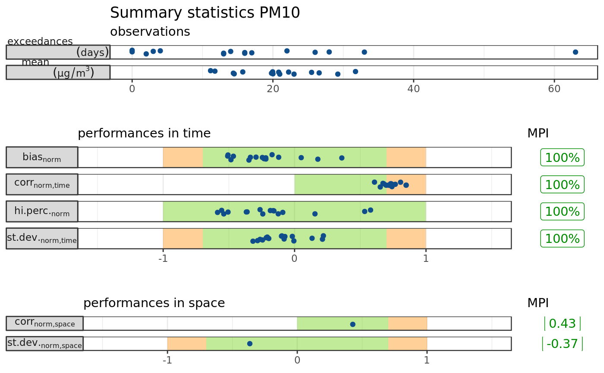

summary_plot.Rdsummary_report: prepare input
summary_report(data, obs, mod, point, pollutant = c("NO2", "O3", "PM10", "PM2.5"), beta = 2) summary_plot(s_rep, title = NULL)
| data | a data frame including observations and model forecasts |
|---|---|
| obs | name of the column with observed data |
| mod | name of the column with forecasts |
| point | name of the column with station ID |
| pollutant | one of |
| beta | parameter \(\beta\) (default is 2) |
| s_rep | output of |
| title | main title for the plot (if |
summary_report returns a list of 3:
summary_pointsa data frame with 8 variables for each station
Pointstation ID
Obs.aveannual mean of observations (paired with forecasts)
Mod.aveannual mean of forecasts (paired with observations)
mpi_biasModel Performance Indicator for the bias (see MPI_bias)
mpi_corr_timeModel Performance Indicator for the correlation in time (see MPI_corr_time)
mpi_sdev_timeModel Performance Indicator for the standard deviation in time (see MPI_sdev_time)
mpi_percModel Performance Indicator for high percentile values (see MPI_perc)
n_validno. of valid data
summary_overalla data frame with 3 overall indicators
mpi_corr_spaceModel Performance Indicator for the correlation in space (see MPI_corr_space)
mpi_sdev_spaceModel Performance Indicator for the standard deviation in space (see MPI_sdev_space)
n_pointsno. of valid stations
parametersa list of 7 parameters
Janssen et al., 2017. "Guidance Document on Modelling Quality Objectives and Benchmarking. Version 2.1"
#>#> #>#> #> #>#> #> #>Mod <- dMean(mod.data %>% filter(Var=="c_PM10"), value = "Value", time = "Time", point = "Point") Obs <- obs.pm10 %>% mutate(Day=format(Time,"%Y-%m-%d"), Point=ID) Dat <- inner_join(Mod, Obs, by=c("Point", "Day"), suffix = c(".mod", ".obs")) # calculate indicators s_rep <- summary_report(Dat, obs = "Value.obs", mod = "Value.mod", point = "Point", pollutant = "PM10") # plot summary_plot(s_rep)#> Warning: font metrics unknown for character 0xa#> Warning: font metrics unknown for character 0xa#> Warning: font metrics unknown for character 0xa#> Warning: font metrics unknown for character 0xa#> Warning: font metrics unknown for character 0xa#> Warning: font metrics unknown for character 0xa#> Warning: font metrics unknown for character 0xa#> Warning: font metrics unknown for character 0xa#> Warning: font metrics unknown for character 0xa#> Warning: font metrics unknown for character 0xa#> Warning: font metrics unknown for character 0xa#> Warning: font metrics unknown for character 0xa